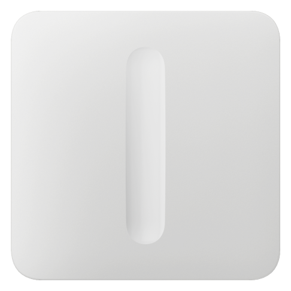

![LightSwitch (1-gang) [120] Jeweller](../assets/img/p/c-ls-120-one-gang-white-4d1141c256-322.webp)

LightSwitch (Crossover) Jeweller
Interrupteurs d'éclairage
Réf. fabricant LS.C.J · Ajax Systems, marque partenaire
Sur devisÉtude, fourniture et installation par Active Sécurité 974
Interrupteur tactile intelligent de croisement
- Communication : sans fil
- Étude et devis gratuits, sans engagement
- Installation chez vous, partout à La Réunion
- Partenaire agréé Ajax Systems
Caractéristiques
En bref.
Données issues de la fiche officielle du fabricant, reformulées. Fiche constructeur (nouvel onglet)
| Modèle | LightSwitch (Crossover) Jeweller |
|---|---|
| Référence fabricant | LS.C.J |
| Type | Interrupteurs d'éclairage |
| Points clés |
|
| Coloris officiels | Noir, Graphite, Blanc, Ivoire, Fumée, Huître, Gris, Olive |
| Prix | Sur devis |
| Disponibilité | À confirmer lors du devis |
Dans la même famille
Autres produits.


![LightSwitch (3-way) [120] Jeweller](../assets/img/p/c-ls-120-three-way-white-c87472981d-322.webp)
![LightSwitch (4-way) [120] Jeweller](../assets/img/p/c-ls-120-four-way-white-7483214a97-322.webp)
